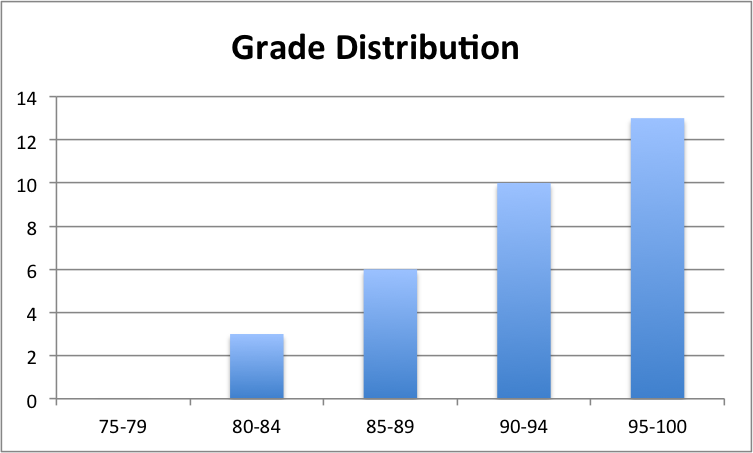

Explanations: Here list all the courses relevant to computer science and math that I have taken in my undergraduate study. Some irrelevant courses, especially those about politics, which we are forced to take by the government, are excluded from this list, for example, Basic Principles of Marxist(not matrix...) Philosophy, Military Training and Theories, and Compendium of Chinese Contemporary and Modern History.
| Course | Grade |
| Advanced C Language and programming | 98 |
| Linear Algebra and Analytic Geometry | 85 |
| Mathematical Analysis for Science and Technology Majors | 89(term 1), 84(term 2) |
| Programming with Assembly Language | 88 |
| Analogy Electronic Technique | 97 |
| Probability Theory and Mathematical Statistics | 100 |
| Set Theory and Graph Theory | 89 |
| Mathematical Modeling | 95 |
| Mathematical Logic | 90 |
| Numerical Methods | 90 |
| Data Structure and Algorithms | 93 |
| Design in Digital Circuit | 93 |
| Modern Algebra | 90 |
| Principles of Computer Organization | 90 |
| Formal Language | 88 |
| MATLAB Language and Its Applications | 97 |
| Operating System | 100 |
| Programming Practice | 98 |
| Computer Design and Practice | 92 |
| Project Design in Data Structure and Algorithms | 95 |
| Computer Interface Technology | 95 |
| Computer Network | 84 |
| Web Information Processing and Application | 94 |
| Virtual Reality | 94 |
| Information Retrieval | 95 |
| .Net Programming | 95 |
| Introduction to Artificial Intelligence | 83 |
| Image Processing | 93 |
| Data Mining | 95 |
| Technology Competition I | 100 |
| Graduation Design | 89 |